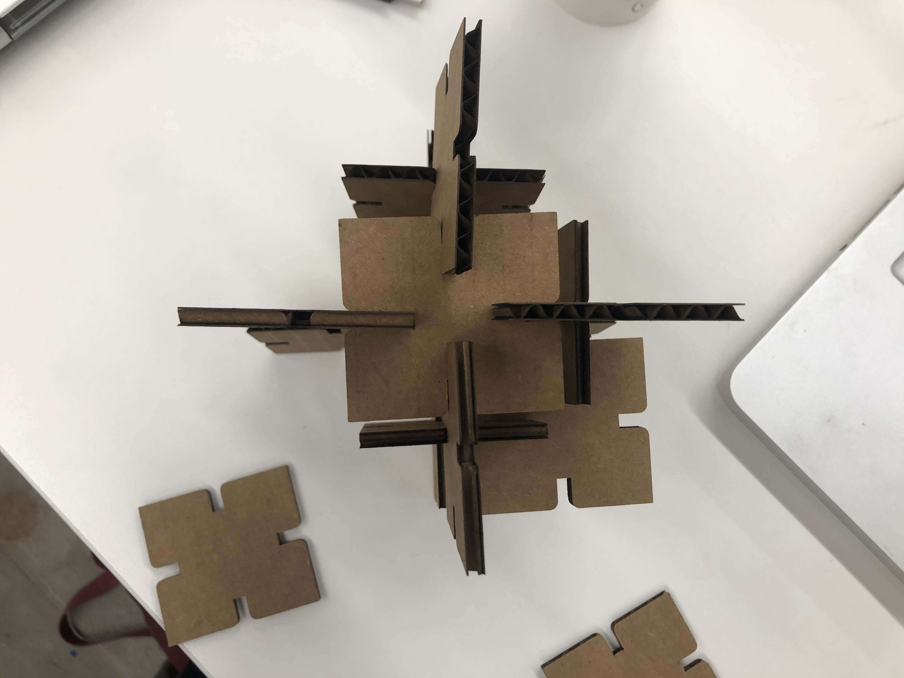

Week 2: 2D Design and Cutting
Creating a Press Fit Kit
A Construction of a Cube.
Final result: I made at least 16 laser cut objects and then constructed this piece shown below.


A Construction of a Cube.
Final result: I made at least 16 laser cut objects and then constructed this piece shown below.
When starting this project, I was still very new to the program Fusion 360 so I wanted to go through one of the tutorials once more to get all the steps correct. I figured my time in the lab on Monday would be the time and place to do it.
Overall, I was less concerned about the final result than I was about getting comfortable with Fusion 360 and with the laser cutter. I can always make more complex projects later once I get these things down.
I made several of these objects (left) and brought them over to the cutter. Once there we noticed that the laser cutter was cutting the object twice. We ended up with 8 objects on this round. We deleted one layer of the design and tried again.
This time it only cut once as it is suppose to do and I got another 8 objects. Not sure how this happened but maybe somehow I saved two sketches on top of each other (right).

The objects that were cut twice where perhaps slightly smaller and resulted in looser fits when jointed. Other than that there wasn't too much of a noticable difference.
Below: Properly cut (left) and cut twice (right)
I'm looking forward to using these tools to make more laser cut projects in the future.
Here is an external link to the week 2.
Back to Home Page